Foto's
Keuken
De keuken was een van de eerste punten op onze TODO lijst binnendeurs. We koken graag en besteden aardig wat tijd in de keuken. Het is dan fijn om van
alle gemakken en comfort voorzien te zijn. En het oog wil ook wat!
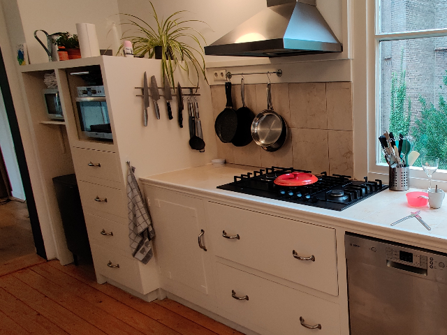
De keuken was oorspronkelijk voorzien van een betegeld aanrechtblad.
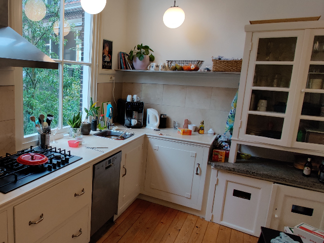
Het granito aanrechtblokje dateert waarschijnlijk uit de jaren '30.
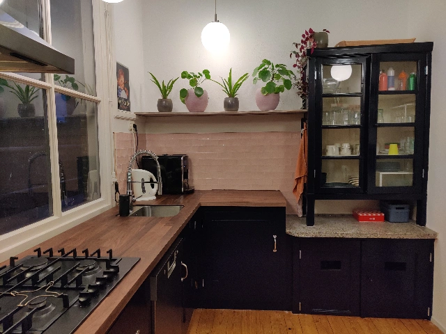
De eerste facelift was voornamelijk cosmetisch. Likje verf, nieuw aanrechtblad met spoelbak en nieuwe tegeltjes op de muur.
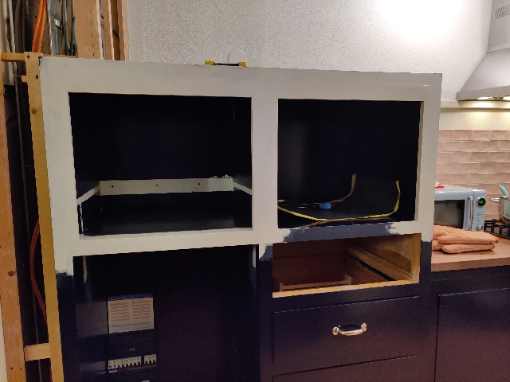
Omdat mijn vrouw graag bakt heb ik de bestaande koven aangepast om ruimte te maken voor twee ovens.
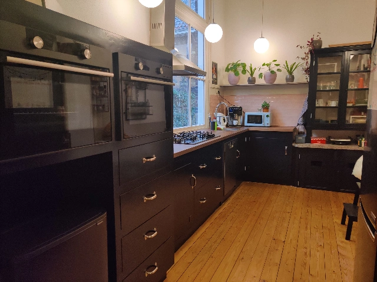
Het eindresultaat na de eerste klusronde in de keuken.
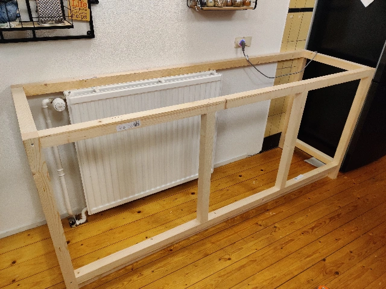
Al snel hadden we behoefte aan meer opbergruimte en aanrecht oppervlakte. Daarom besloot ik om zelf nog een aanrechtblok te bouwen.
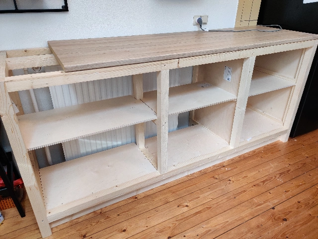
Het frame rondom de radiator met uitsparingen om luchtcirculatie te bevorderen.
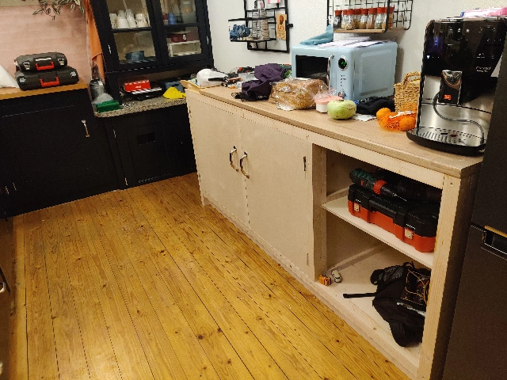
Ik ben ITer van beroep, mijn (amateuristische) timmermanskunsten zie ik vooral als een leuke vrijetijdsbesteding.
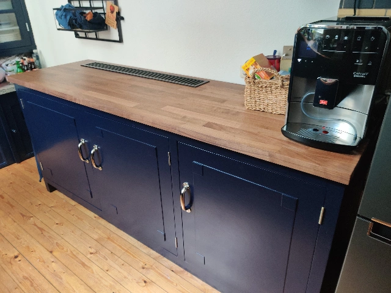
Met triplex de detailering aangebracht, rooster boven de radiator en het laatste likje verf.
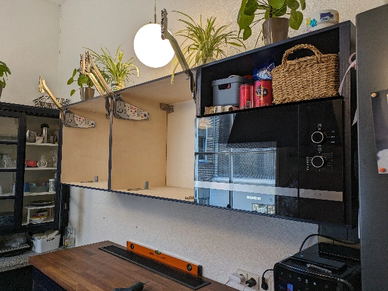
Toen er nog meer behoefte was aan opbergruimte, ben ik begonnen aan een hangkast boven het nieuwe blok.
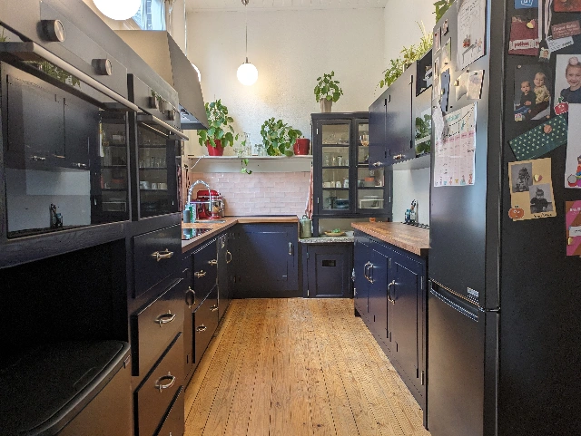
Voorlopig zijn we nu wel klaar met de keuken denk (hoop) ik.